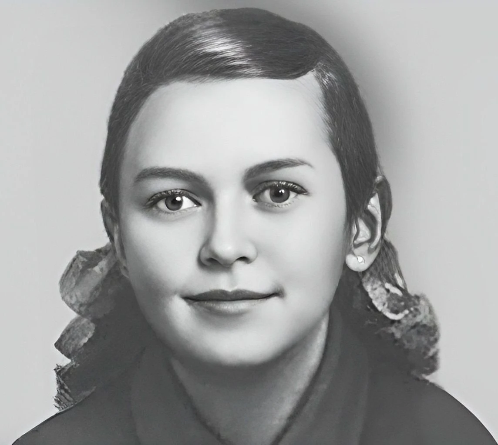

🎖️ Зина Портнова
1926–1944 · Юная подпольщица · Герой Советского Союза

Зинаида Мартыновна Портнова (Зина Портнова) — юная подпольщица, разведчица и Герой Советского Союза, ставшая одним из символов сопротивления на оккупированной территории Белоруссии.
📌 Основные факты
| Зинаида Мартыновна Портнова | |
|---|---|
| Рождение | 20 февраля 1926, Ленинград |
| Смерть | 10 января 1944, Полоцк (17 лет) |
| Национальность | Белоруска |
| Организация | Подполье «Юные мстители» (ст. Оболь) |
| Звание | Герой Советского Союза (посмертно, 1 июля 1958) |
📜 Происхождение и начало войны
Родилась 20 февраля 1926 года в Ленинграде в семье рабочего (по национальности белоруска). Окончила 7 классов.
В начале июня 1941 года приехала на каникулы к родственникам в деревню Зуи (Витебская область, Белоруссия). Там её и застала война: девочка оказалась на оккупированной территории.
🌲 Подполье «Юные мстители»
С 1942 года Зина — член подпольной организации «Юные мстители» (руководитель — Ефросинья Зенькова) на станции Оболь. Она распространяла листовки, собирала разведданные и участвовала в диверсиях.
Работая посудомойкой в столовой курсов переподготовки немецких офицеров, она добывала секретную информацию.
Самым известным её деянием стала диверсия с отравлением супа в августе 1943 года, в результате которой, по советским данным, погибло более ста офицеров.
🎖️ Партизанский отряд и плен
После провала организации Зину переправили в партизанский отряд имени К. Е. Ворошилова, где она стала разведчицей.
В декабре 1943 года, возвращаясь с задания по выяснению причин провала подполья, она была схвачена в деревне Мостище и опознана предательницей.
🔥 Допрос и побег
В гестапо деревни Горяны на одном из допросов Зина, воспользовавшись моментом, схватила со стола пистолет следователя и застрелила его и ещё двух гитлеровцев.
Она пыталась бежать, но была схвачена у реки (по одной из версий, пистолет дал осечку при попытке застрелиться).
💔 Пытки и казнь
После этого её больше месяца жестоко пытали, но она не выдала товарищей. Утром 10 января 1944 года её расстреляли в тюрьме Полоцка.
По свидетельствам, 17-летняя девушка была слепой и полностью седой.
🏅 Память
Указом Президиума Верховного Совета СССР от 1 июля 1958 года Зинаиде Мартыновне Портновой посмертно присвоено звание Героя Советского Союза.